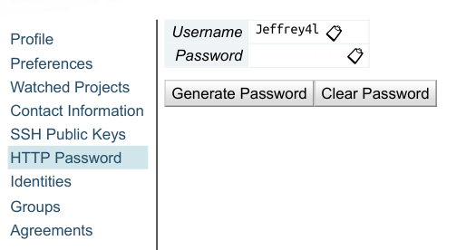
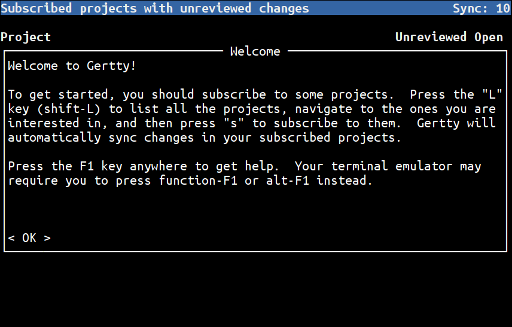
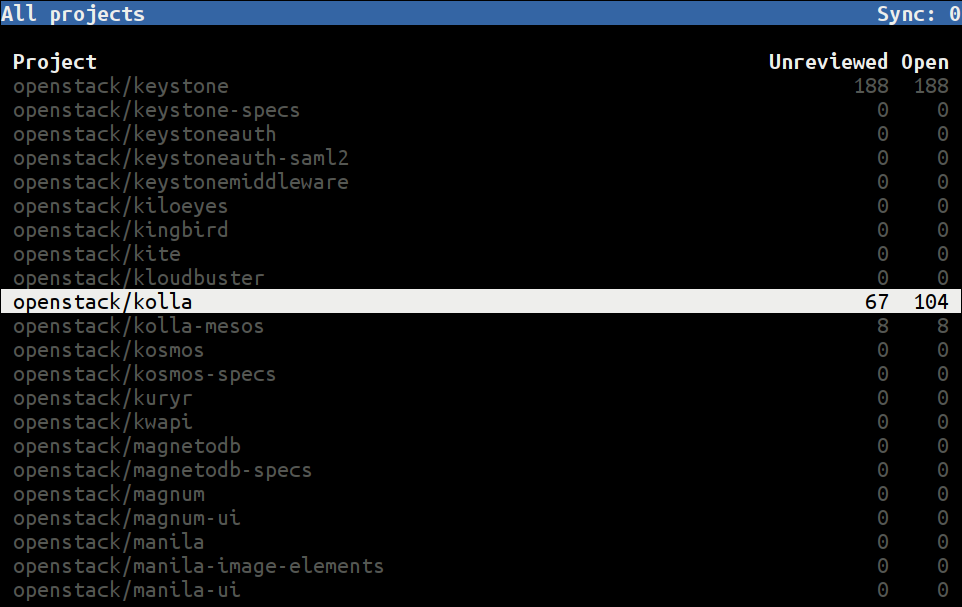
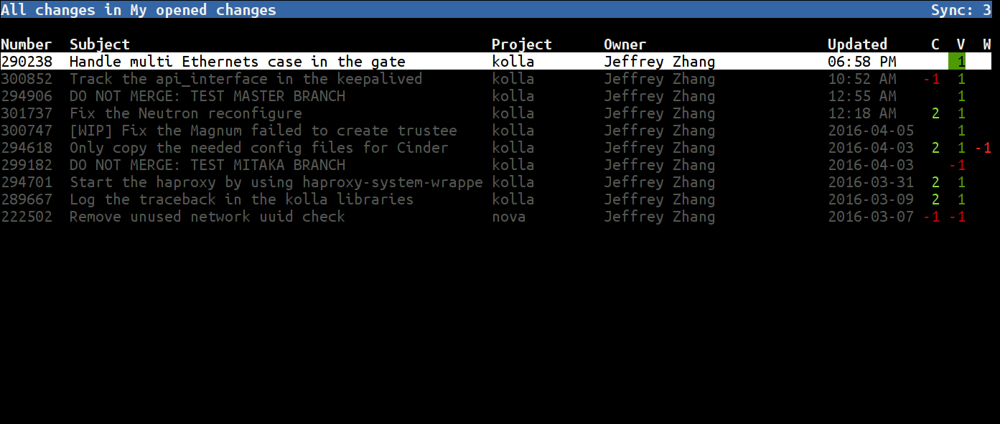
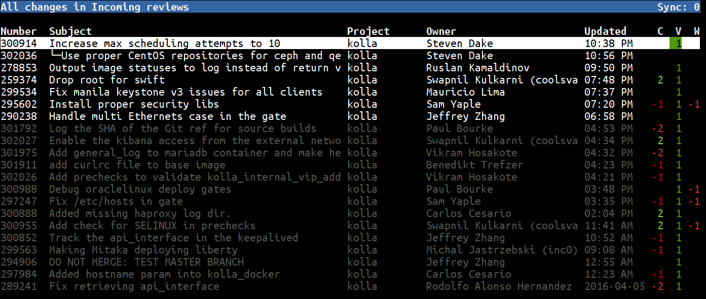
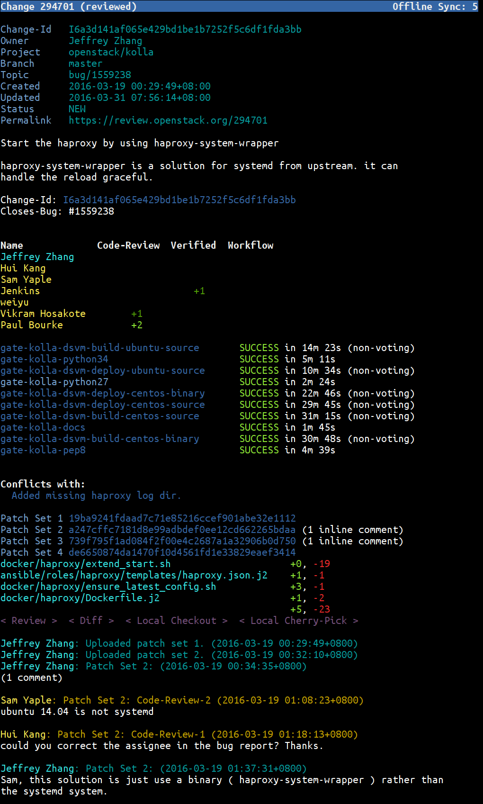
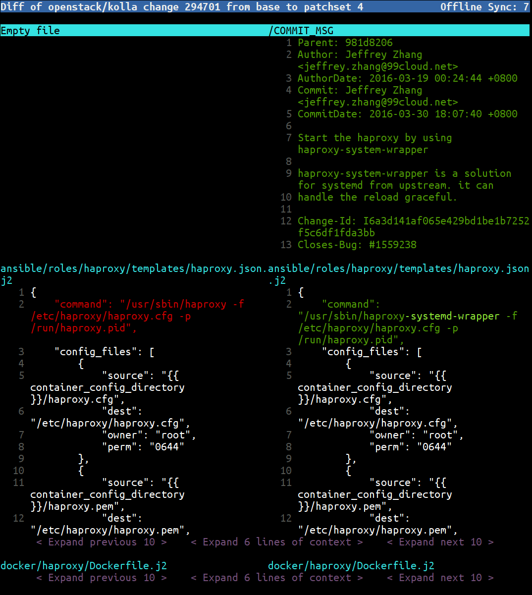

现在很多项目都使用 Gerrit 做为代码 Review 工具。OpenStack 所有的项目就是放在 Gerrit 上的。Gerrit 提供了一个 Web 页面来做 Code Review。今天我介绍一个更加高效的工具来处理 Gerrit Review。它的名字叫 gertty。
Gertty 的 OpenStack 下面的一个项目1，官方的介绍是：Gertty is a console-based interface to the Gerrit Code Review system。就是一个基于终端的 Gerrit 代码 Review 工具。
相比较 Web 版本，它的优势体现在
- 工作流程 - Gertty 的界面设计和邮件、网络消息的设计很类似，很容易上手。而且它特别适合多个项目时处理大量 Review 请求。
- 离线使用 - Gertty 会把 Gerrit 上你订阅的项目的所有的数据同步到本地。包括 Git 仓库，所有的 Review 信息。你本地所有的 Review 操作也会同步到 Gertty。
- 速度 - 因为 Gertty 会把数据都同步到本地，你的操作也会存放到本地，之后在统一同步到服务器，所以速度是很快的。
- 方便 - Gertty 把所有的 Changes 都同步到了本地，你可以很方便的 checkout 到正在 Review 的代码
安装
gertty 就是一个 Python 写的应用，所以安装很方便。可以从 pypi 安装，也可以从直接从源码安装。
pip install gertty
从源码安装
git clone https://github.com/openstack/gertty.git
cd gertty
pip install .
配置
Gertty 使用一个 YAML 格式的配置文件。可以从源码里找到一些例子2。我们以 OpenStack 为例。
首先要选配置在 Gerrit 上面配置自己的 HTTP Passowrd。打开 https://review.openstack.org/#/settings/http-password , 去修改里面的 Password

如果使用源码安装，请把把源码里的 examples/openstack-gertty.yaml 文件拷贝到 ~/.gertty.yml，修改该文件内容如下(主要是 servers 下面的内容)，其它部分不用修改：
如果使用 pip 安装的，在 /usr/local/share/gertty/examples/openstack-gertty.yaml 这个位置可以找到所需要的文件。
servers:
- name: openstack
url: https://review.openstack.org/
username: Jeffrey4l
password: xxxx
git-root: ~/
直接运行 gertty, 看到如下欢迎界面。

如里面的说明，按F1或? 进帮助， 我们按 L 进项目列表，找到自己感兴趣的项目按 s 进行订阅。

按 F2 可以看到自己的 changes

按 F3 可以看到需要自己 review 的代码

基中，高亮的是需要自己 review 的代码，灰色的是已经 review 过的。
选择一个进入后，能看到已经所有的 review 信息。包括 CI 的结果，评论，所有的 PatchSet。

再按 d， 可以查看修改的 diff

在任何界面都可以按 F1 或 ? 打开帮助，查看该界面下有哪些按键可以用。
总结
- 由于 gertty 把所有数据都同步下来了，做 review 确实很快。
- gertty.yaml 配置文件里支持修改按键功能，如果觉得默认键位不舒服，可以进行修改，可定制性很高。更多的配置项信息可以看
examples/reference-gertty.yml文件里的内容
REF
本文标题:Code Review 神器 -- Gertty
文章作者:Jeffrey4l
发布时间:2016-04-11
最后更新:2016-04-11
原始链接:http://xcodest.me/effective-code-review-tool-gertty.html
许可协议:"署名-非商用-相同方式共享 3.0" 转载请保留原文链接及作者。
Comments